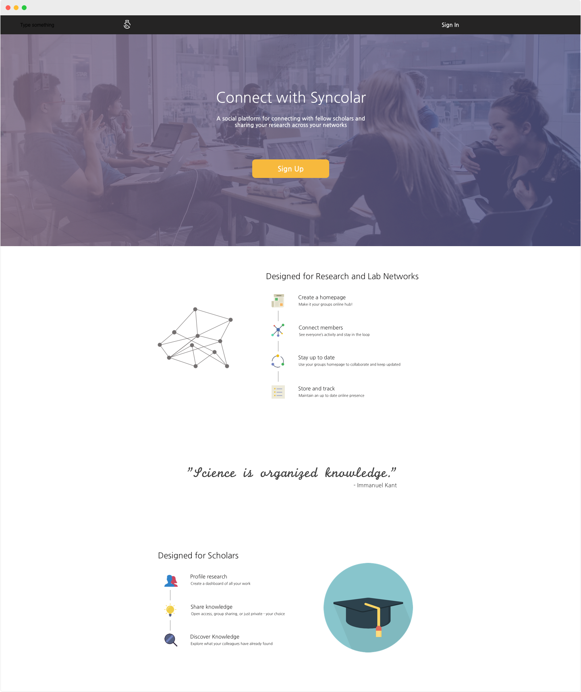

I was a part of the original team that prototyped the application. Responsible for the development of front-end features and the design for desktop and mobile in the preliminary stages. Currently responsible for redesigning the interface using beta user feedback, code refactoring, and implementation of integral features on the front-end.
